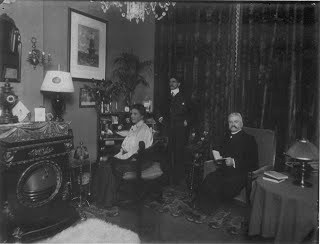
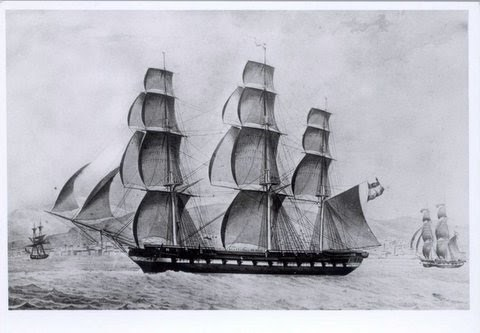
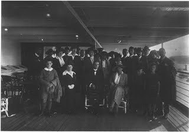

Welkom bij
Familie Coops
Deze website behandelt de familie Coops die haar oorsprong heeft in Zelhem, Hengelo (Gelderland) en Doetinchem. Ontdek de genealogie, biografieën, historische documenten en de heraldiek van de familie.

Genealogie
De stamboom van de familie Coops, met generaties en onderlinge verwijzingen.
Naar de genealogie
Biografieën
Levensverhalen en historische bijzonderheden van familieleden.
Naar de biografieën
Oorsprong
De herkomst van de familie Coops en haar vroegste geschiedenis.
Naar de oorsprongHeraldiek
Het familiewapen Coops en de geschiedenis van de heraldiek.
Naar de heraldiek